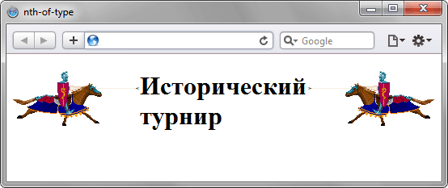

Псевдокласс :nth-of-type
Псевдокласс :nth-of-type используется для добавления стиля к элементам указанного типа на основе нумерации в дереве элементов.
Синтаксис
Селектор:nth-of-type(odd | even | <число> | <выражение>) {...}Значения
- odd
- Все нечётные номера элементов.
- even
- Все чётные номера элементов.
- <число>
- Порядковый номер указанного элемента. Нумерация начинается с 1, это будет первый элемент в списке.
- <выражение>
- Задаётся в виде an+b, где a и b целые числа, а n — счётчик, который автоматически принимает значение 0, 1, 2...
Если a равно нулю, то оно не пишется и запись сокращается до b. Если b равно нулю, то оно также не указывается и выражение записывается в форме an. a и b могут быть отрицательными числами, в этом случае знак плюс меняется на минус, например: 5n-1.
За счёт использования отрицательных значений a и b некоторые результаты могут также получиться отрицательными или равными нулю. Однако на элементы оказывают влияние только положительные значения из-за того, что нумерация элементов начинается с 1.
В табл. 1 приведены некоторые возможные выражения и ключевые слова, а также указано, какие номера элементов будут задействованы.
| Значение | Номера элементов | Описание |
|---|---|---|
| 1 | 1 | Первый элемент. |
| 5 | 5 | Пятый элемент. |
| 2n | 2, 4, 6, 8, 10 | Все чётные элементы, аналог значения even. |
| 2n+1 | 1, 3, 5, 7, 9 | Все нечётные элементы, аналог значения odd. |
| 3n+2 | 2, 5, 8, 11, 14 | — |
| -n+3 | 3, 2, 1 | — |
| 5n-2 | 3, 8, 13, 18, 23 | — |
| even | 2, 4, 6, 8, 10 | Все чётные элементы. |
| odd | 1, 3, 5, 7, 9 | Все нечётные элементы. |
Пример
<!DOCTYPE html>
<html>
<head>
<meta charset="utf-8">
<title>nth-of-type</title>
<style>
img:nth-of-type(2n+1) { float: left; }
img:nth-of-type(2n) { float: right; }
</style>
</head>
<body>
<p><img src="images/left.gif" alt="">
<img src="images/right.gif" alt=""></p>
<h1>Исторический турнир</h1>
</body>
</html>В данном примере нечётные картинки выравниваются по левому краю окна, а чётные картинки по правому (рис. 1).

Рис. 1. Применение псевдокласса :nth-of-type к изображениям
Спецификация
| Спецификация | Статус |
|---|---|
| Selectors Level 4 | Рабочий проект |
| Selectors Level 3 | Рекомендация |
Браузеры
| Internet Explorer | Chrome | Opera | Safari | Firefox |
| 9 | 4 | 9.5 | 3.1 | 3.5 |
| Android | Firefox Mobile | Opera Mobile | Safari Mobile |
| 2.1 | 1 | 9.5 | 3.1 |